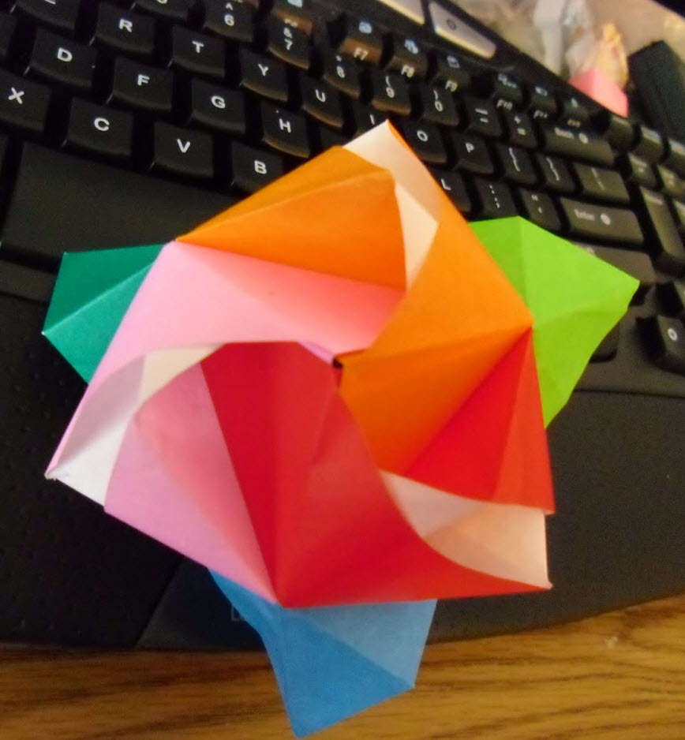
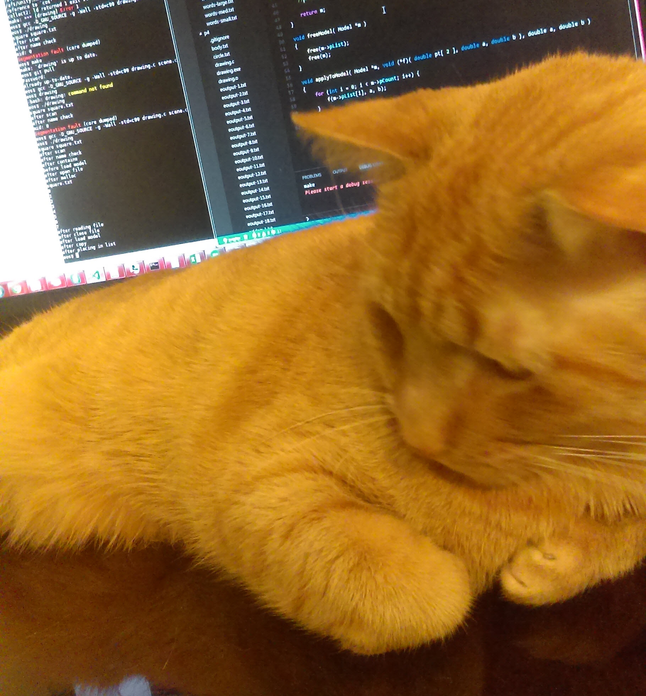

About Me
Aerospace engineer by day, software engineer by night
 
Welcome! My name is Kim Nguyen,
I studied aerospace engineering from North Carolina State University (NCSU) and graduated in 2015. During my undergraduate studies as an aerospace engineer I joined a club called the Aerial Robotics Club. There I learned about system integration and my first exposure to software development. Though I did not personally create any of the software used by our system, I did model a few mathematical models which I then created Matlab scripts which were then imported by our software team. One of my favorite was a model for simulating medical supply drop. With my model our team was able to drop a medical supply unit and be the closest team to the target!
Since graduating, I have decided to learn computer science as a hobby. However now, computer science has evolved past a hobby. I decided to enroll into NCSU Computer Science classes as a non-degree seeking student. I plan to take as many classes as possible to equip me with the means necessary to be a successful software engineer.
Portfolio
Section Analysis Tool
Tool I designed and developed to increase the efficiency of analyzing sections using Python, tkinter and PMW.
The tool takes in simple polygons and calculates the principal moments of inertia along with the theta relative to the graph x axis. The tool also is able to calculate stresses and locate the minimum and maximum stress points for a given load. This allows for users to quickly identify the critical locations and determine if a section fails based on an input load.
The tool takes in a list of shapes a long with the young's modulus, typically denoted as E. Based on the shapes and their location, the tool is able to calculate all sectional properties about the principal axis. Users can also choose to suppress the principal axis such that the axis theta value is 0. This will allow for users to get either the principal moments of inertia or the normal moment of inertia (inertia about global x axis and global y axis).
Based on the list of shapes the tool will calculate a stress field around the object's perimeter. The stress field calculates the stress along a boundary based on 10 points. If more points are used to create the same section, then more stress field points are created. When a user hovers over a point the point will indicate the location of the stress point and the stress at the location. Min and max stresses are indicated by a boxed point with a yellow internal fill.
Class Scheduler
Tool for tracking student schedules using Java and Swing
Users have unique ids and based on their level they will have different features. Registrars have full authority and are capable of added new student and faculty users. Registrars are also capable of editing course data and the overall course catalog.
When a student logs in they will only be able to edit their class scheduler by adding or dropping courses. If the course is full, they will automatically be added to a waitlist queue. When a slot opens, the student will be automatically added to the class log.
When a teacher logs in they will only be able view their class roster.
IS Ticketing
System to track tickets and current state using Java and Swing
This system requires no login. Tickets are saved, and read in XML to provide a consistent format. After opening the application, users can load in a previously saved ticket list or start a new one. Each item in the list will provide the item's ID, current state and the ticket title. The ticket list can also be filtered by the owner and the submitter of the ticket.
When a user goes in to edit a selected ticket, depending on the current state the user will be provided different options. For instance, a ticket in the new state only has the option to be assigned to an owner. A ticket in the assigned state can either be accepted the assignee or closed by the assignee.
To Do List
Application to track activities using Java and Swing
A simple to do list application which allows for users to create/edit/delete categories and create/edit/delete multiple task list. The application allows for multiple task list so that users can separate task as they deem fit.
Overall task list presents task with a unique ID, a task title, the start date, optional due date and complete date as well as a completed state and category of task. To view a tasks’ detail, the user clicks on the task which they'd like to know more about. To delete the selected task, the user must go into the task menu and is asked for confirmation.
Ecosystem Simulator
Application which simulates an ecosystem using Java and Swing
The ecosystem has an initial state which is the user is prompted for. Ecosystems have a default configuration for each tier but can be replaced by user values. Animals have ranks, based on their rank they act differently. An animal can be a Low, Middle or High ranked animal. Each animal has a wait time for breeding, a time span which they must eat a meal otherwise they starve to death, an age limit, a color and a symbol.
In the default configuration animals of lower rank live longer, but are incapable of eating, therefore they will always die either from old age or being eaten. Default low tier animals at the start of the round will always try to breed first if they can, otherwise they will move to a random location. Default middle tier animals at the start of the round will try to breed, eat then move. Animals will only ever do one action per round and if one dies from starvation, then they will be left on the board until the round is fully complete to allow animals to eat the corpse.
Animal tiers are derived from the Animal super class and allows for additional ranks to easily be added. If a user wanted to add another animal, they would simply have to extend the super class onto their new class and implement the abstract methods deciding how to act on a turn.